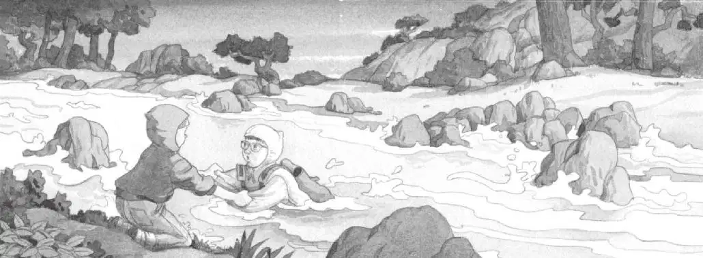

杰克和安妮蜷缩在一起，现在他们的两边都有武士，他们被包围了！
杰克把身体紧紧贴在巨石上。
那名武士越走越近，他看了看右边，又看了看左边。
杰克屏住了呼吸。
“回归自然。”安妮轻声说。
“什么？”杰克压低声音问。
“回归自然，做一块石头。”
“哦，该死，”杰克想，“这简直就是疯话。”但他还是将眼睛紧紧地闭了起来，试着成为岩石的一部分。
杰克尽量做到像岩石一样静止、稳固、沉默无声。
没过多久，他就觉得自己已经和岩石一样坚实而可靠了。他多么希望自己永远都是一块岩石。
“他走了，”安妮说，“他们都走了。”
杰克睁开眼睛，那名武士已经离开了。他站起身，从巨石上方望过去，那些火把也消失了。
“我们走吧。”安妮说。
杰克深深吸了口气，觉得自己很了不起。他感到自己越来越像一名忍者，甚至像是一名忍者大师。
“往东前进！”他说。
于是，他们一路向东走去。他们绕过一块块岩石走下山，来到了那条宽阔而冰冷的小溪边。
水流似乎比之前更加湍急了。
“我怎么没看见树屋？”安妮说。
杰克朝小溪对岸那片黑乎乎的小树林望了望，月光照着树上的那些白花，然而树屋在哪儿呢？
“我也没看见。”杰克说，“我们得先过小溪，再找树屋。”
溪水哗哗地冲刷着岩石。
“吱吱。”小老鼠从口袋里探出了脑袋。
“别害怕。”安妮说着拍了拍小老鼠的脑袋，“就像我们这样，也让自己做一名忍者吧。”
“我们走吧。”杰克说。
杰克深深地吸了一口气，迈步踏进了激流。冰冷的溪水翻滚着淹没了他的膝盖。水流太急了，冲得他连站都站不稳。
杰克急忙张开双臂保持平衡，溪水在他的周围打着转儿。
他快要冻死了！
“杰克！”安妮抓住杰克的两只胳膊，扶着他回到了岸上。

“好险啊！”安妮说。
杰克擦了擦眼镜。幸好，眼镜没有掉进水里。
“你还好吗？”安妮问。
“不……不大好。”杰克回答。他的牙齿咯咯打战，全身的骨头都冻透了。
“我们过不去了，”安妮说，“再试一次会淹死的。”
“不淹死……也……会被冻死。”杰克说。
他拉下运动衫的帽子。此刻，他觉得自己不再像忍者了。
安妮也把自己的帽子拉了下来。她叹了口气，说：“我们该怎么办呢？”
“吱吱。”
小老鼠从安妮的运动衫口袋里钻出来，一下子跳到了地上，然后便急急忙忙地跑远了。
“花生米，回来！”安妮喊道。
“不，”杰克说，“我们必须跟上它。”
“为什么？”安妮问。
“我们必须按忍者大师说的去做！”杰克说，“跟随自然！”
“对，没错！”安妮说，“跟随花生米！可是花生米去哪儿了呢？”
月光下，杰克看见了那只小老鼠，它正顺着溪边的草地奔跑呢。
“在那儿！”杰克喊道，“快跟上！”
杰克匆匆追着小老鼠。安妮匆匆追着杰克。他们在水流湍急的溪边奔跑。
月光下，一根掉下来的树枝横跨在溪流较窄的地方，树枝两头恰好架在小溪的两岸。
小老鼠一溜烟地从树枝上跑过去了。
“花生米在过桥！”安妮赶紧跟了过去。
“等一等！”杰克喊道，“我们不能走那根树枝。它太细了，会被压断的！”